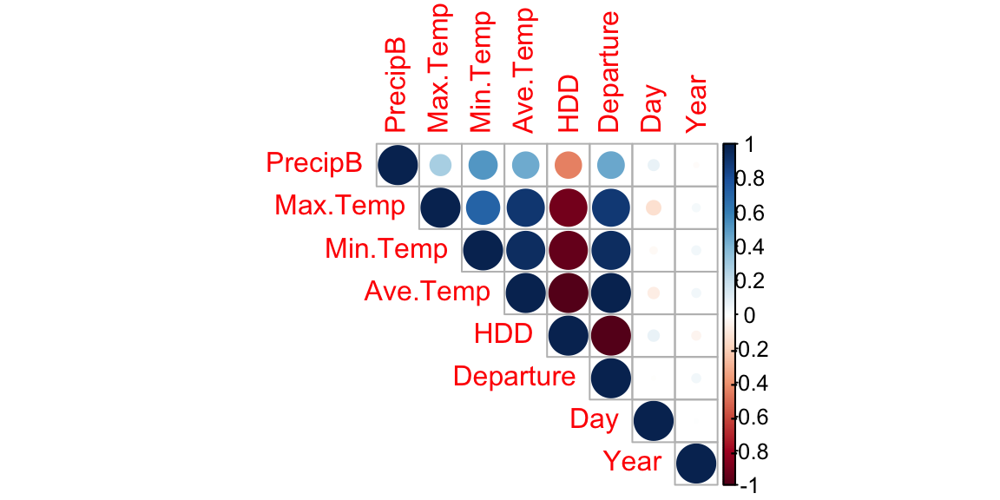
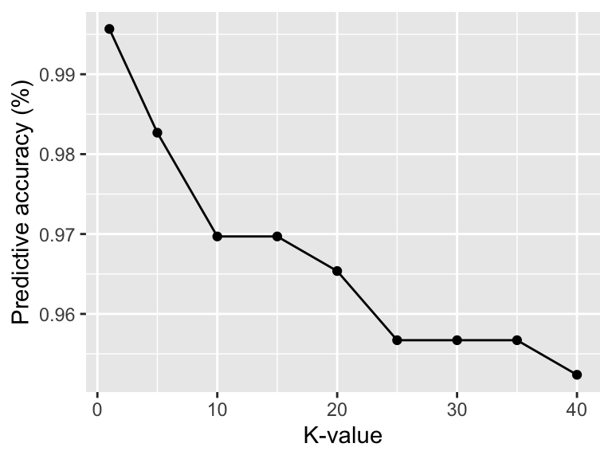

A machine learning project using logistic regression, Naïve Bayes, and k-Nearest neighbors to predict precipitation in Seattle
The complete R code for this project lives here.
I used weather data collected by National Weather Service for every December day in Seattle from 1990 to 2021. These data included date, max/min/average temperature, average temperature departure from “normal” (departure), heating degree days (HDD), cooling degree days (CDD), and inches precipitation.
str(PBdf1)## 'data.frame': 989 obs. of 8 variables:
## $ Date : chr "12/1/21" "12/2/21" "12/3/21" "12/4/21" ...
## $ Max.Temp : chr "58" "51" "46" "43" ...
## $ Min.Temp : chr "50" "39" "32" "37" ...
## $ Ave.Temp : chr "54" "45" "39" "40" ...
## $ Departure : chr "13.8" "5" "-0.9" "0.3" ...
## $ HDD : chr "11" "20" "26" "25" ...
## $ CDD : chr "0" "0" "0" "0" ...
## $ Precipitation: chr "0" "0.04" "0" "0.64" ...All variables had values with leading and/or trailing white spaces that couldn’t be removed using a simple gsub() function. Closer examination showed that this was because most of the variables were in utf8 format, so I created a simple function to fix these erroneously formatted values.
utf8::utf8_print(unique(PBdf1$Ave.Temp), utf8 = FALSE)## [1] "54" "45" "39" "40" "38"
## [6] "41" "47" "41.5" "38.5" "39.5"
## [11] "42.5" "36" "37" "35.5" "40.5"
## [16] "43" "35" "29.5" "22.5" "28.5"
## [21] "25.5" "34" "22" "37.0\u00a0" "38.5\u00a0"
## [26] "35.5\u00a0" "39.5\u00a0" "40.5\u00a0" "44.5\u00a0" "48.0\u00a0"
## [31] "50.0\u00a0" "42.5\u00a0" "36.5\u00a0" "40.0\u00a0" "44.0\u00a0"
## [36] "45.0\u00a0" "46.5\u00a0" "47.0\u00a0" "46.0\u00a0" "45.5\u00a0"
## [41] "49.5\u00a0" "33.0\u00a0" "32.5\u00a0" "37.5\u00a0" "36.0\u00a0"
## [46] "47.5\u00a0" "43.5\u00a0" "42.0\u00a0" "41.5\u00a0" "38.0\u00a0"
## [51] "39.0\u00a0" "51.5\u00a0" "35.0\u00a0" "33.5\u00a0" "30.5\u00a0"
## [56] "27.0\u00a0" "41.0\u00a0" "34.0\u00a0" "32.0\u00a0" "34.5\u00a0"
## [61] "31.0\u00a0" "31.5\u00a0" "29.0\u00a0" "30.0\u00a0" "49.0\u00a0"
## [66] "43.0\u00a0" "26.5\u00a0" "24.5\u00a0" "50.5\u00a0" "55.0\u00a0"
## [71] "27.5\u00a0" "48.5\u00a0" "53.0\u00a0" "55.5\u00a0" "51.0\u00a0"
## [76] "29.5\u00a0" "28.5\u00a0" "22.5\u00a0" "21.5\u00a0" "20.5\u00a0"
## [81] "23.0\u00a0" "28.0\u00a0" "54.0\u00a0" "25.0\u00a0" "21.0\u00a0"
## [86] "18.5\u00a0" "19.0\u00a0" "19.5\u00a0" "25.5\u00a0" "26.0\u00a0"
## [91] "22.0\u00a0" "17.0\u00a0" "53.5\u00a0" "56.0\u00a0" "52.5\u00a0"
## [96] "17.5\u00a0" "16.0\u00a0" "12.0\u00a0" "14.5\u00a0" "M\u00a0"
## [101] "20.0\u00a0" "12.5\u00a0" "11.0\u00a0" "16.5\u00a0" "14.0\u00a0"replace.values <- function(x) x <- iconv(x, "latin1", "ASCII", sub="")In addition to replacing the utf8 formatting, I corrected formatting inconsistencies in the Date variable and created a binary precipitation variable for classification analysis called PrecipB (0 = NO precipitation, 1 = YES precipitation).
PBdf2 <- PBdf1 %>%
#Remove "T" and "M" values for precipitation, as there is no public documentation to indicate what these values mean (and there are only a few instances in the dataset)
filter(!grepl("T",Precipitation, fixed = T),
!grepl("M",Precipitation, fixed = T)) %>%
#Replace all utf8 values
mutate_all(replace.values) %>%
#Fix dates, which were coded differently for 2021 versus all previous years
mutate(Date = case_when(grepl("/",Date,fixed = T) ~
as.Date(Date, format= "%m/%d/%y"),
grepl("-",Date,fixed = T) ~
as.Date(Date, format= "%Y-%m-%d"))) %>%
#Separate out Date into month, day, and year
mutate(Year = lubridate::year(Date),
Month = lubridate::month(Date),
Day = lubridate::day(Date)) %>%
#Make sure relevant variables are in numeric format
mutate(across(c(Max.Temp:Precipitation,Day,Month,Departure,Year), as.numeric)) %>%
#Create binary presence/absence variables for precipitation
mutate(PrecipB = case_when(Precipitation > 0 ~ 1,
Precipitation ==0 ~ 0)) %>%
#Select out CDD, which only has a value of zero (makes sense, given likelihood of having to cool your house during December in Seattle)
select(PrecipB,ends_with("Temp"),HDD,Departure, Day,Year)After cleaning, the dataset was ready for splitting.
str(PBdf2)## 'data.frame': 923 obs. of 8 variables:
## $ PrecipB : num 0 1 0 1 1 1 1 1 1 1 ...
## $ Max.Temp : num 58 51 46 43 43 46 50 48 43 44 ...
## $ Min.Temp : num 50 39 32 37 33 36 44 35 34 35 ...
## $ Ave.Temp : num 54 45 39 40 38 41 47 41.5 38.5 39.5 ...
## $ HDD : num 11 20 26 25 27 24 18 23 26 25 ...
## $ Departure: num 13.8 5 -0.9 0.3 -1.6 1.6 7.7 2.3 -0.6 0.5 ...
## $ Day : num 1 2 3 4 5 6 7 8 9 10 ...
## $ Year : num 2021 2021 2021 2021 2021 ...I separated the initial dataset into training and testing datasets using a 3:1 split ratio.
set.seed(1234)
sample_set <- sample(nrow(PBdf2),round(nrow(PBdf2)*0.75), replace = F)
training <- PBdf2[sample_set,]
testing <- PBdf2[-sample_set,]As shown below, there was a class imbalance in PrecipB (more precipitation days than non-precipitation days), so I used Synthetic Minority Oversampling Technique (SMOTE) to balance the training dataset.
round(prop.table(table(select(PBdf2, PrecipB),exclude = NULL)),4)*100##
## 0 1
## 29.58 70.42smote <- SMOTE(training, training$PrecipB)
training.adj <- smote$data %>% select(-class)
round(prop.table(table(select(training.adj, PrecipB),exclude = NULL)),4)*100##
## 0 1
## 46.39 53.61Before model-building, I examined the potential for multicollinearity between variables. Given the inherent relationship between minimum, maximum, and average temperature, HDD, CDD, and Departure I expected to find substantial multicollinearity between these variables but was unsure which would be the best proxy for current weather. As shown below, Departure was strongly correlated with all the other weather-related variables, so I decided to use Departure as my proxy for weather/temp (with Day and Year as additional co-variates). 
Since my aim was to determine how well Departure predicted presence/absence of precipitation, Precip was my outcome variable and Departure was my primary explanatory variable with Day and Year included as predictors (shown under “class” in the model summary below).
summary(logitm1)##
## Call:
## glm(formula = PrecipB ~ Departure + Day + Year, family = binomial,
## data = training.adj)
##
## Deviance Residuals:
## Min 1Q Median 3Q Max
## -2.4025 -0.9285 0.3707 0.8978 2.9536
##
## Coefficients:
## Estimate Std. Error z value Pr(>|z|)
## (Intercept) 22.799989 17.682502 1.289 0.19726
## Departure 0.220891 0.017465 12.648 < 2e-16 ***
## Day 0.027820 0.008818 3.155 0.00161 **
## Year -0.011404 0.008817 -1.293 0.19589
## ---
## Signif. codes: 0 '***' 0.001 '**' 0.01 '*' 0.05 '.' 0.1 ' ' 1
##
## (Dispersion parameter for binomial family taken to be 1)
##
## Null deviance: 1244.36 on 900 degrees of freedom
## Residual deviance: 977.25 on 897 degrees of freedom
## AIC: 985.25
##
## Number of Fisher Scoring iterations: 5A quick check of the variance inflation factors (VIF) for each predictor variable indicated there was no substantial multicollinearity between variables (i.e, no VIF values about 5).
vif(logitm1)## Departure Day Year
## 1.010410 1.006763 1.003814To get the estimated change in odds rather than log-odds, I exponentiated the raw model coefficients. As shown below, assuming other co-variates are held constant, for one unit increase in Departure the odds of precipitation increase by a factor of ~1.25.
exp(coef(logitm1)[c("Departure","Year","Day")])## Departure Year Day
## 1.2471880 0.9886608 1.0282109Since everything about my initial training model checked out, I then used the training model to predict precipitation values in the testing dataset.
logitpred1 <- predict(logitm1, testing, type = 'response')
summary(logitpred1)## Min. 1st Qu. Median Mean 3rd Qu. Max.
## 0.009712 0.405948 0.618488 0.576120 0.761160 0.967987The logistic regression model had a predictive accuracy of 77.06%.
## [1] 0.7705628Another method used in classification problems is Naïve Bayes, which can be used when the response variable has 2 or more categories. Here, I used Naïve Bayes to estimate the probability of precipitation and compared the predictive accuracy to that of the logistic regression model using the same testing and training datasets.
bayes.mod1 <- naiveBayes(PrecipB ~ Day + Year + Departure,
data = training.adj, laplace = 1)As shown below, the predictive accuracy for the Naïve Bayes model was 78.35% - slightly above the predictive accuracy of the logistic regression model.
bayes.pred1 <- predict(bayes.mod1, testing, type = "class")
bayes.pred1.table <- table(testing$PrecipB, bayes.pred1)
bayes.pred1.table## bayes.pred1
## 0 1
## 0 44 20
## 1 30 137sum(diag(bayes.pred1.table))/nrow(testing)## [1] 0.7835498After running the logistic regression and Naïve Bayes models, I also compared the predictive accuracy of both of these methods to k-Nearest Neighbors. Since k-Nearest Neighbors uses Euclidean Distance to generate classification predictions, the variables in the “model” needed to be normalized, which I did by z-scoring all predictor variables. I also used a variety of k-values to determine the effects on predictive accuracy, as shown below. Overall, the predictive accuracy was extremely high (ranging from 95.24% to 99.57% depending on the specified k-value). 
By comparing logistic regression, Naïve Bayes, and k-Nearest Neighbors, it’s clear that k-Nearest Neighbors provides the best predictions on whether or not it will precipitate in Seattle on any given day in December. This is likely influenced by the relatively small sample size and low dimensionality of this particular dataset, which allows for fast computation using this lazy-learning method.